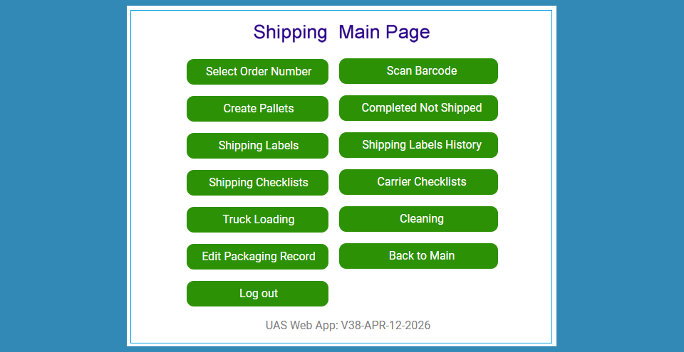

Custom Liquid Solutions LLC
Local-First Web Application Architected by DataCore Systems
We architected an offline-resilient local-first web application in 2024 with a robust SQL Server backend to power end-to-end enterprise operations for Custom Liquid Solutions LLC—a Florida corporate leader in agricultural chemical sales and purchases.

Key Integrated Modules Include:
- Inventory & Warehouse Management: Real-time tracking and stock precision.
- Order Processing Suite: Streamlined handling of both Purchase and Customer Orders.
- Dashboards: We created dashboards that exhibit which order is being processed by which user and what is the present status.
- Fulfillment & Logistics: Automated shipping workflows paired with instant email status updates for suppliers and customers.
We continue to actively maintain, optimize, and expand this platform with high-impact feature additions to match their evolving business needs.
Need an offline-resilient local-first platform for your logistics? Contact us today to discuss your enterprise requirements and discover how DataCore Systems can optimize your warehouse and inventory workflows.
Contact Us